Aseprite Importers
Notice how the Tree tag disappeared and the Tree layer is now present with the Background one in the Background tag.
On the other hand, you can have tags with many frames on the same layer. This is the most common case because you often want your props to be animated, like in the case of our crackling bonfire (see marker 2 in the image above). These tools enable a smooth workflow for creating graphical elements in the game.
The main goal is to integrate with Aseprite in a way that promotes quick iterations, starting from a visual draft and evolving game scripting and graphics together as things take shape.
Importers are available for Characters, Rooms, and Inventory items, allowing almost one-click creation of the complete set of graphical assets representing the game world.
Basics
The plugin works by reading tags from a properly organized Aseprite source file and using that information to populate the target Popochiu Object in a single pass.
The result of the process differs depending on the target object type:
- For Characters, every tag represents a specific animation (e.g., the talk animation), and when applicable, the animation direction (e.g., up, down, left, or right). So in a typical project of medium size, there will be specific tags for talk up, talk down, walk left, walk right, and so on, plus very specific tags for special cutscene animations (eat multifolded pizza, brush alien dog hair, jump across cakes chasm, etc.).
- For Rooms, every tag represents a Prop and for each tag, a new prop with its own animation is created and populated with the appropriate animation (or sprite). Background and foreground elements are props, of course, and it will be possible to configure each prop's visibility and clickability before importing starts.
- For Inventory Items, every tag in a single source file represents Inventory items that - despite usually being represented by a still image - can also be animated. Having the whole inventory in a single file is very convenient for consistency and easier file management.
Despite having slightly different outputs, the structure of these Aseprite source files is basically the same.
Let's look at examples for both.
Aseprite file organization
Please take a look at the following image:
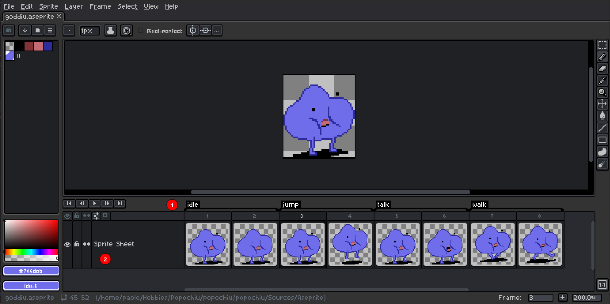
The first notable thing is that a single file contains all animations for the character, identified by tags (1). Each tag will be used to create a single animation, named after the tag, for the Character.
Under the hood
Popochiu Characters already embed a Sprite2D and an AnimationPlayer. The whole spritesheet is assigned as texture to the Sprite2D and every tag becomes a configured animation in the AnimationPlayer - even the single-sprite ones. They are then accessible by specific methods on the Character, as explained below.
Your file can also be organized in layers (2). Layer names are completely up to you and you may create as many as you like. The importer has an option to import only visible layers; that's useful if you have reference or background layers that you don't want to be part of your sprite: just hide them before importing and make sure the Only visible layers importer option is enabled.
Layers are particularly useful in Room source files, because without them, isolating props tends to become pretty messy. Take a look at the following example.
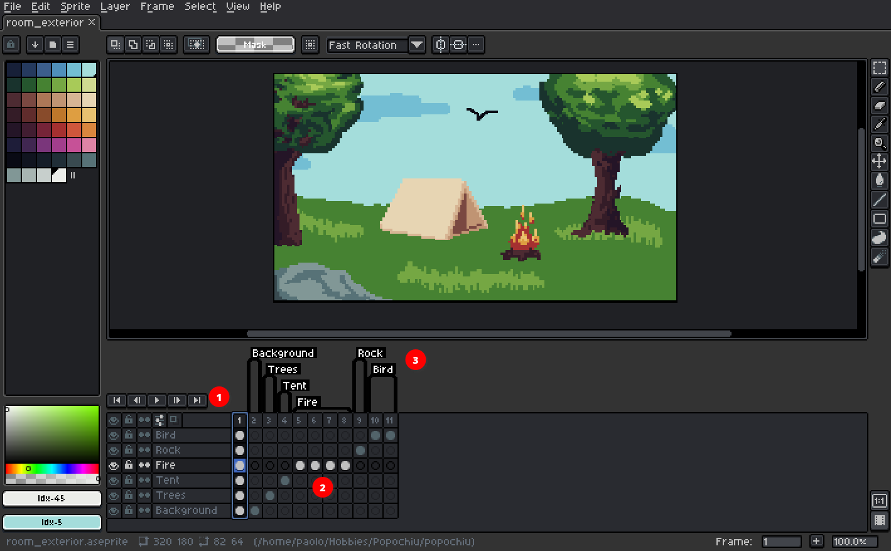
To keep different props apart, the image is organized in layers (marker 1). In this specific case, layer names and tag names match, but you can of course have situations where more than one layer is necessary to render a specific tag (it's pretty common really); a typical example is the background: in the example above, we could have decided to have the trees on the background prop. The resulting Aseprite file would have looked like this then:
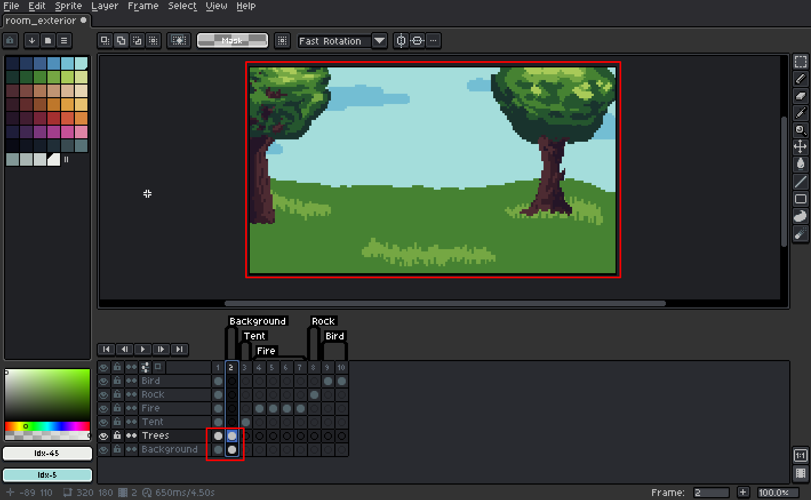
Notice how the Tree tag disappeared and the Tree layer is now present with the Background one in the Background tag.
On the other hand, you can have tags with many frames on the same layer. This is the most common case because you often wants your props to be animated, like in the case of our crackling bonefire (see marker 2 in the image above):
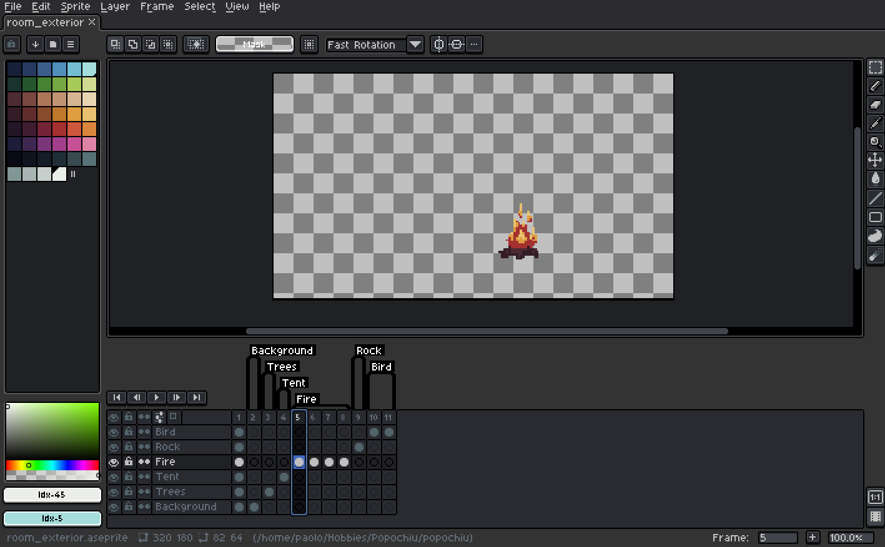
Here we have an isolated fire, composed of 4 frames, all grouped by the proper tag.
Basically all combinations of layers and frames are allowed: what you see in a specific animation if you play the tag in Aseprite, will be imported as is in the Prop.
Note
Observant readers will have noticed that the first frame has no tag and of course, despite including all "props", it's not animated. Indeed it is there just as a reference frame for the artist to paint "in place". You may have as many untagged frames as you want in your Room source files: they will be ignored by the importer and will never land into your Popochiu project. This makes things very convenient when composing the scene.
Under the hood
As for Popochiu Characters, every Prop comes with a bundled Sprite2D and a dedicated AnimationPlayer. Each tag will be extracted as a spritesheet and imported as a single animation. Yes, this may seem overkill but this setup common to Props and Characters allows for easier maintenance and is there to support more functions in the future.
Note
Even more observant readers will also have realized at this point, that by how things work, each prop sprite will be the size of the whole scene. That's right, but don't be horrified. This approach has a lot of advantages at the sole cost of asking a swift third-millennium game engine to render some more transparent pixels. What we gain is automatic placing of the visual in the scene at import time, and a common rect origin for each prop that will keep baselines and other coordinates consistent among them in the same scene.
The very same concept applies to Inventory Items too. Here is an example source file:
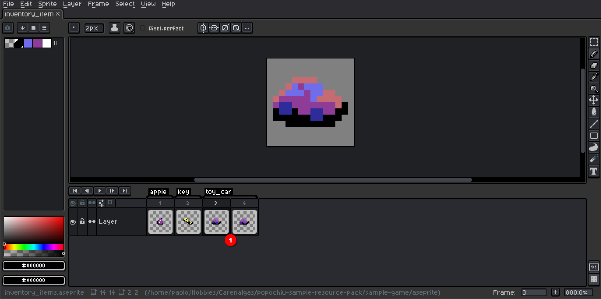
As you can see, to animate an item in the inventory grid, you just have to create a multi-frame tag, as for the characters. Each tag will be imported as a new item, or - if the item already exists - its animation will be updated.
Back to the tags! You can name them whatever you want, but to get the most out of this functionality, stick to the following conventions:
Case style
You can use snake_case or PascalCase to name your tags, as you prefer. They will be converted to snake_case anyway before creating animations. Since this can change in the future, we strongly advise not to rely on case sensitivity to differentiate between animations!
Be explicit.
Reserved animation names
For characters, the engine will automatically recognize the following reserved names and use them properly: idle, walk, talk, grab. Naming animations like this, the engine will assume that the character is facing right and it will be flipped to the left and used for up and down directions too, unless you provide...
Directional suffixes
The engine supports directional suffixes for eight possible directions (up, up-left, left, down-left, down, etc). The complete list of suffixes is _u, _ur, _r, _dr, _d, _dl, _l, _ul. Every animation you want to create (not just the reserved ones) can be made direction-aware by creating it with the right suffixes.
For example, to create a walk animation that supports the four main directions, you create walk_u, walk_d, walk_r and walk_l. If you don't create walk_l, walk_r will be automatically flipped.
Note
As mentioned the importer will convert every animation name to snake_case. This means that the following tags are all equivalent: talk_u, Talk_u, talkU, TalkU.
The good: you can use the style you prefer and directions will still be recognized. The bad: if you have Talk_u and TalkU and they mean different things, you're out of luck. Talk_u and Talku works though.
Single-animation file
If a file contains no tags, it will be imported as a single animation named default.
Multiple source files
If you are in need, you may want to separate your character animations over different source files. This is feasible, but keeping everything in a single file is the best option to speed up development by a great amount.
The plugin allows you to set a single source file at a time, so if you have multiple sources, you have to constantly switch between source files, losing your preferences in the process. In addition, you have to trade the ability to reset all animations off for an incremental import (see below).
Importer settings
The Aseprite Importer exposes its configuration under the Popochiu -> Import sections in both the Editor Settings and the Project Settings.
Editor Settings
Editor Settings contain configurations that may change between team members' local development environments, like the Aseprite command path, and/or that are valid across different projects.
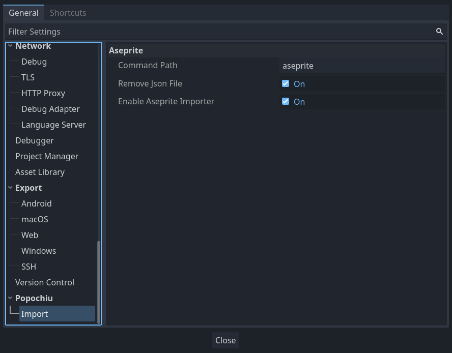
-
Enable Aseprite Importer: Allows the user to enable or disable the importer in their editor. Useful to avoid cluttering the inspector or getting errors for those who don't use Aseprite or don't have it available in a specific environment.
Note
This option is only available starting from Popochiu 2.0. In Popochiu 1.0 the importer can't be disabled.
-
Command Path: This is the single most important setting to make the plugin work. On Windows, this field must contain the full path to Aseprite executable (having the command in
PATHwon't work due to some Godot limitations on command execution under Windows). In *nix systems (Linux and MacOS), you can choose to provide the Aseprite command (if inPATH) or the full path, as you prefer.
Anyway, the plugin will check for the correct execution of the command before initializing itself. If something goes wrong, the output panel will give useful information to fix the problem. - Remove JSON file: When Aseprite is invoked by the importing procedure, it generates a JSON file with metadata that is necessary to complete the job, alongside the spritesheet PNG file. This file is then useless and can be safely erased, especially if you are versioning your code (you are, aren't you?!). If for some reason you want to keep the output file, just unflag this setting.
Note
In Popochiu 1.x for Godot 3, all these settings are found under "Project Settings" (see below).
Project Settings
Among the Project Settings you'll find those you may want to share with your team, and that mostly impact the importing workflow, setting defaults shared by every instance of the plugin.
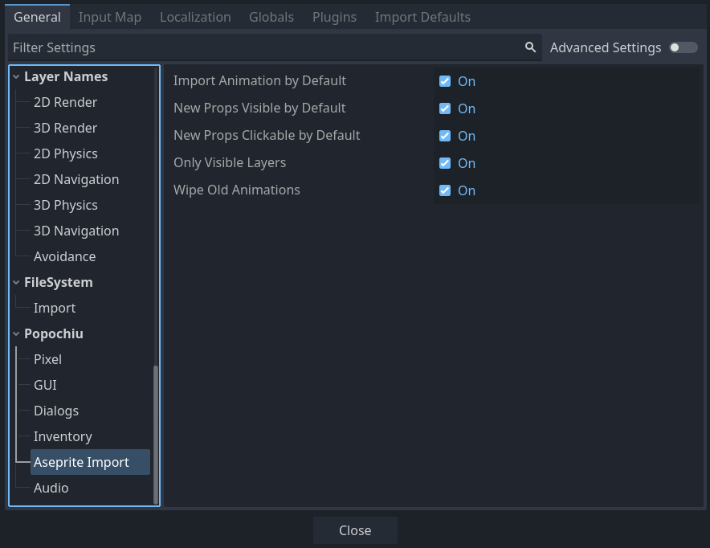
- Import Animation by Default: When a source file is scanned, a list of the contained tags is populated. For each element in the list, you can choose if you want it imported or not. This is useful if you have half-baked animations or reference tags of some sort. When this setting is flagged, all new animations in the list will be automatically flagged as "to be imported". When this setting is off, they will be flagged as "not to be imported".
- New Props Visible by Default: When a Room source file is scanned, a list of the contained tags is populated. For each element in the list, which will be imported as a Prop, you can choose if you want the new prop to be created visible, or invisible (useful for props that have to be shown only at certain conditions). When this setting is flagged, all elements in the list will be automatically flagged as "visible". When this setting is off, they will be flagged as "hidden".
- New Props Clickable by Default: When a Room source file is scanned, a list of the contained tags is populated. For each element in the list, which will be imported as a Prop, you can choose if you want the new prop to be interactive, or non-interactive. When this setting is flagged, all elements in the list will be automatically flagged as "interactive". When this setting is off, they will be flagged as "non-interactive".
- Only Visible Layers, Wipe Old Animations: These are the default values for the equally named options that appears at the bottom of the importer interface (see below for more information). Set the defaults as you prefer so you don't have to do it all the times, depending on your workflow.
Importer interface
The importer will show a slightly different interface depending on the target Popochiu Object.
The following sections show what the Inventory Items, Rooms and Characters importers have in common, and highlight the small differences.
Opening the Importer
Popochiu automatically initializes the Aseprite Importers in a dedicated dock, in the lower-right corner of the screen, right under the inspector. The dock shows three tabs, dedicated to the different objects.
While the Inventory tab is always visible, the Room and Character ones are hidden, unless you are editing a scene of the right type. In fact only two tabs will be visible at the same time: either Inventory and Character, or Inventory and Room.
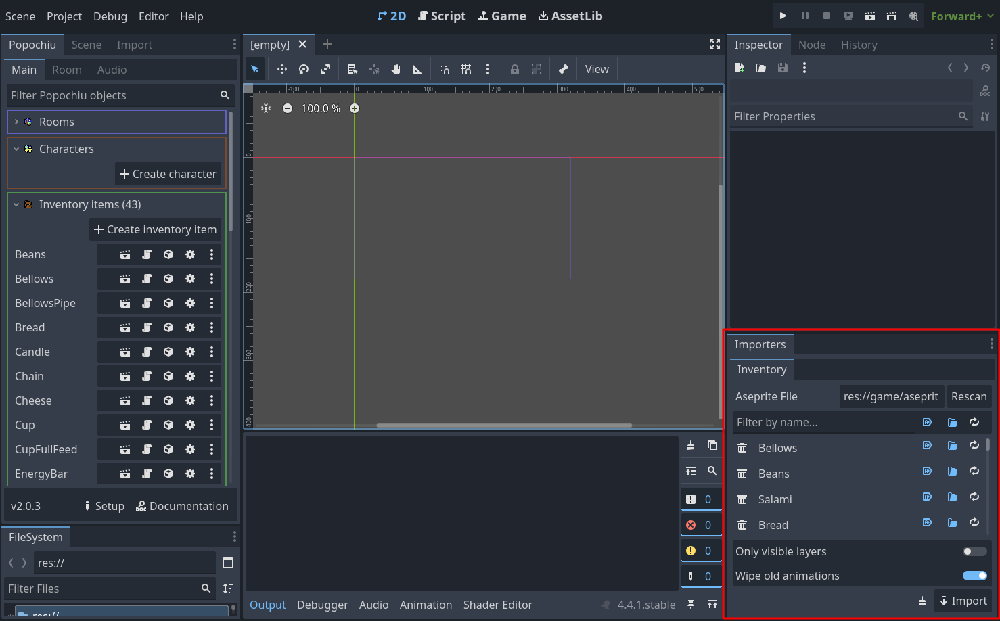
When the editor is focused on an open Character scene, the Character tab is shown:
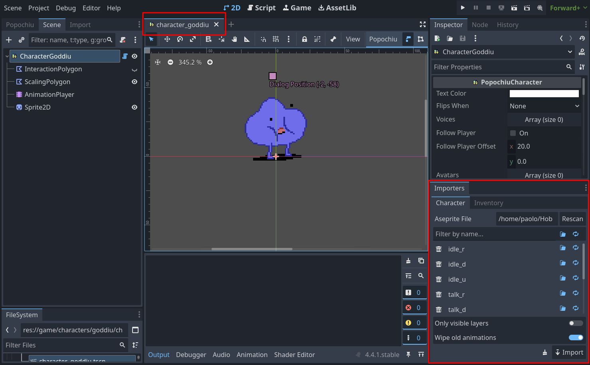
You will not see the importer when you select a character instance in a specific room. To see the importer, you must open the character scene and select its root node.
Likewise, a Room importer is shown when you open a Room scene.
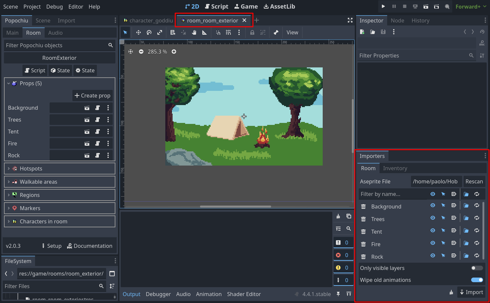
Note
If any error occurs when the plugin starts (for example if there are problems with the Aseprite command or missing dependencies in the scene tree), a warning will be visualized in place of the plugin. Head to the Output Panel to learn how to fix the error.
If you open a proper target scene and the dock is not shown, maybe the functionality is disabled. Check that Popochiu -> Importer -> Enable Aseprite Importer option is flagged in the Editor Settings.
Setting the Importer up
Let's start from the Inventory Items importer, since the other ones will only have small differences.
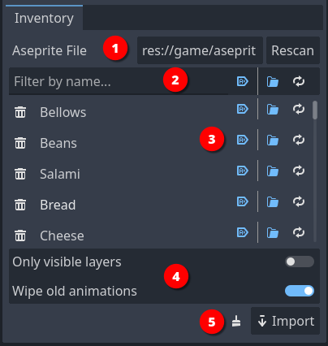
Use Aseprite file field (1) to select the source file. When you do this, the plugin automatically scans the file and lists every tag found (3) (or none if the file is a single animation with no tags - in this case, you're out of luck trying to import it).
For each tag found, three flags are available. Two are common to all the importers (from right to left):
- Set the animation as looping: pretty straightforward, you want it to be turned on (highlighted) if you want the animation to loop. The value defaults to off for inventory items and rooms elements, and to on for characters animations.
- Import this animation: you can select if the specific animation has to be imported. The default is set in the Project Settings (see above).
This one is available only for Inventory and Rooms:
- Set animation as Autoplaying: each tag will be imported as a separate Inventory Item or Room Prop. For each one, you can select if its animation plays automatically, or if the sprite stands still on the first frame, until you activate the animation via your script.
Since the list can get pretty long (in this case, a scrollbar is shown, as in the example image), a header is available (2) with some specific functions:
- A fulltext filter that highlights only the tags containing the string in any position (case-insensitive, no minimum length).
- Bulk buttons to toggle the state of every tag in the list. This button has three states:
- It's on when everything is on. Clicking it switches everything to off.
- It's off when everything is off. Clicking it switches everything to on.
- It's in a "dirty" state when you have a mixed situation. In that case, clicking it will set everything back to the default state (depending on the column). Don't worry, a confirmation dialog is displayed before you wipe all your precious settings!
The Room importer shows two more flags for each tag (1 below):
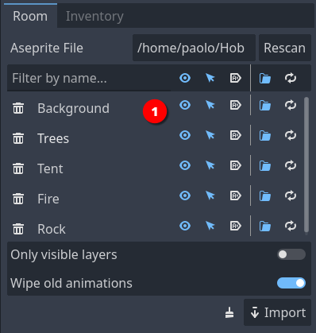
This prop will be visible and This prop will be clickable flags will make the imported prop visible and interactive, respectively.
Note
Visibility and clickability can both be set at a later stage via script or interface, but these settings allow a one-time setting for frequent, iterative reimporting.
Visibility and Import flags are not to be confused. You may want to import an invisible prop that will be made visible during the course of the game (think two props for an open and a closed door, that you want to switch based on player's actions).
The Character importer finally, only has the basic flags (1), because the animation to play is selected and started by the engine:
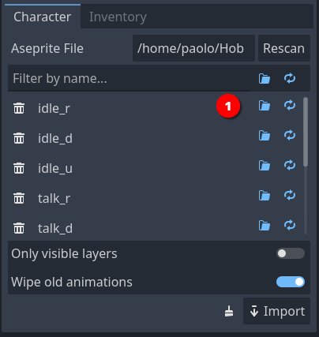
The Rescan button at the top allows you to refresh the tags list if you make any changes to the source file. It will be your quick-iteration best friend. Rescanning the tags will not overwrite the preferences you already selected for each tag. It will anyway update the frame count references for each animation, get rid of tags that are no longer available, and add new ones.
Warning
You must rescan your source file before reimporting it, if you change the frame count for already available animations, or your imported animations will miss some frames or be all messed-up!
Under the list you can set two parameters (4) for the importer:
-
Only visible layers: This flag allows you to ignore hidden layers. Useful if you have reference layers or backgrounds that you don't want to appear in your sprite.
Tip
Remember to hide reference layers before saving the source file!
-
Wipe old animations: When flagged, all the animations already imported will be wiped before re-importing them.
Tip
You typically want to keep this setting flagged when you are iterating over an element graphics and you want to make sure that if you move or rename animations, every possible leftover is removed and the final result is always coherent with the source file, 1-on-1.
You typically want to unflag this when you are working with multiple source files for a single element, and you want to import animation from a file without getting rid of the animations you have already imported before. Beware that animations with the same name will always be overwritten. If you keep this setting unflagged and you have leftover animations saved for an element you will need to remove them by hand.
All these preferences are automatically saved separately for each scene (globally for the inventory), so they are persisted between sessions, and different for each single room or character.
If for some reason you want to completely reset an Importer anew, just click the Reset preferences icon (5) at the very bottom (confirmation required).
Importing animations
Finally, if everything is set up correctly, you can hit the Import button (5). The importer will do its magic (beware: very large files with hundreds to thousands of frames will take a while to load, mainly due to Aseprite exporting them).
When the procedure is over a popup message will report the status and processed tags count.
- For Inventory, you will see that all the inventory items marked for import have been created automatically and populated with the correct sprite and animations. Note that existing items with the same name will have their animations seamlessly updated by the procedure, preserving any other properties or configuration they may have.
- For Rooms, the behavior is similar: all the props marked for import will be created automatically and populated with the correct sprites. If you have animated props (like the fire in this page's example) marked as autoplaying, start the scene and you should see their animations running. You can check the animation is correctly looping, if that's the case.
As for inventory items, already existing props' animations and sprites get updated, but the rest of the element is untouched. The Room importer is not yet tracing colliders automatically (soon to come), but each Prop has an embedded polygon. To edit it, open the prop's scene and click the Interaction Polygon button in the toolbar. - For Characters, you will find all your animations in the AnimationPlayer of your character.
All reserved animations (idle,walk,talk,grab) will automagically be available in your game and used by the engine.
You can useplay_animation()method to play any other animation by passing its name (without directional suffixes) as a parameter.